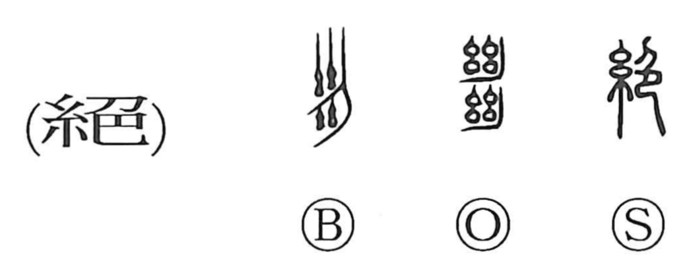

絶

Kun: taeru, tayasu, tatsu | On: zetsu
to sever ・ to cut off ・ to cease ・ to run out
Explanation
A phono-semantic character: the silk radical 糸 evokes thread and supplies the idea, while 色 serves as the phonetic, giving the on-reading zetsu. In its earliest form the graph depicts cutting the thread stretched on a loom, so its primary sense is to cut a thread. From that concrete image it broadened to mean sever, cease, or be exhausted. The character seems also to have referred to colored thread, which underlies uses that convey an emphatic sense of utter, supremely, as in zetsumyo (exquisitely outstanding). The form is attested in Warring States bronze inscriptions and continues to appear on Han-period stone monuments.